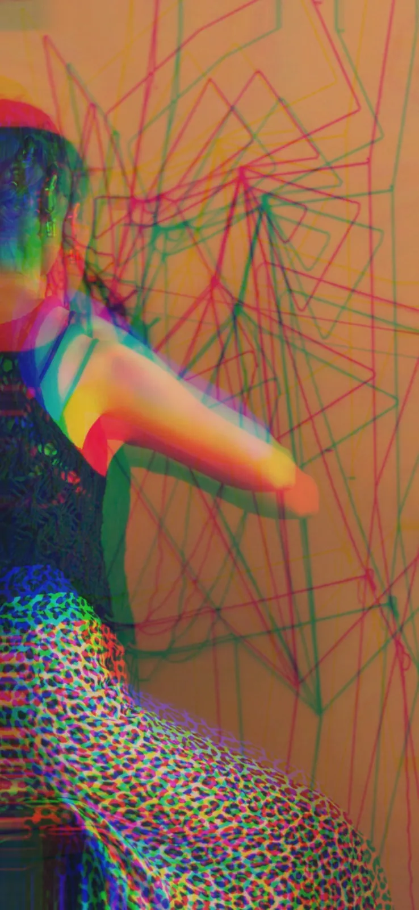
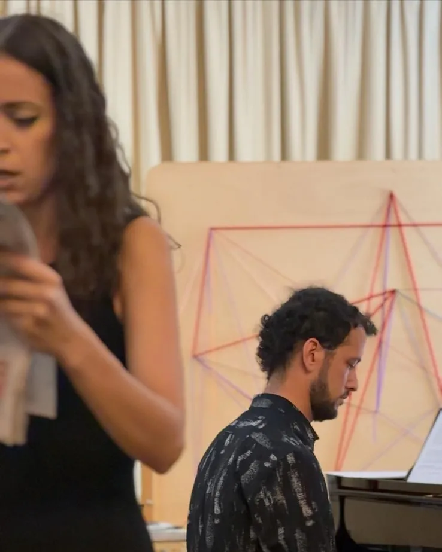
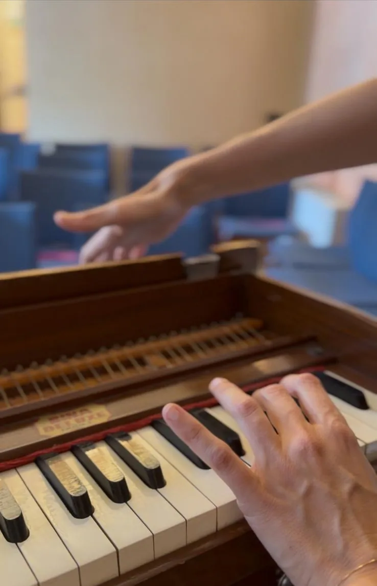
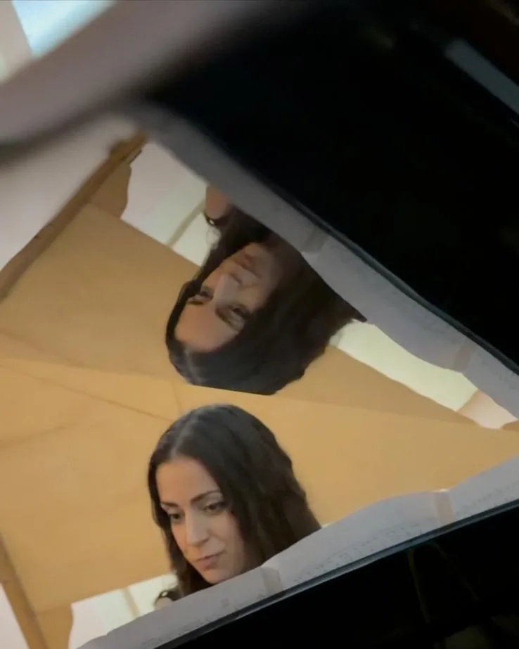
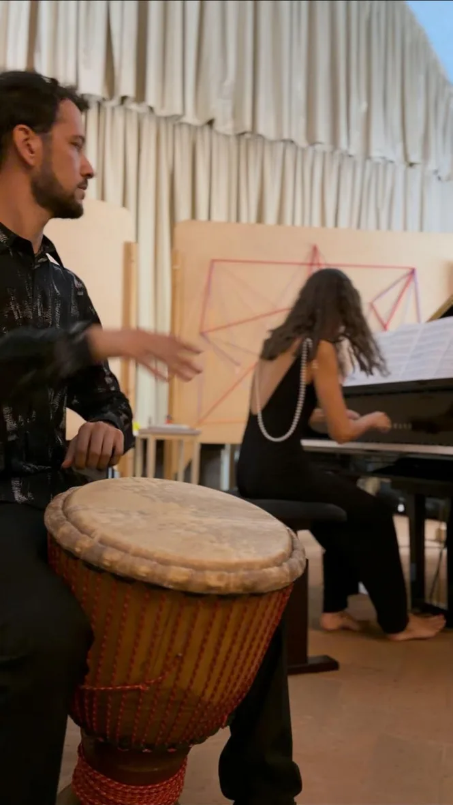

Immersive theatrical concert
More an experience than a show. A crossing. An invitation to listen, to remember, to find ourselves again.
What happens when Orlando wakes up in our time? L'Orlando Ritrovato is an immersive theatrical concert, a journey of music and words through the labyrinth of memory, identity and the way we look at the present.
Orlando comes back to question our age. His ancient, poetic language meets a world of speed, notifications, images and constant noise: a world that seems to have lost the time it takes to listen, imagine and understand.
The music, from the Renaissance to the present day, does not simply accompany the story: it crosses and transforms it, becoming the thread that guides Orlando and the audience into and out of the labyrinth.




Photographs: IANUA.
At the heart of the show lies a question. Like all art, Orlando’s journey asks for a change of perspective: literature becomes a flying carpet linking past, present and eternity, so that we can look at the world again from another angle.
L'Orlando Ritrovato is an invitation not simply to follow the thread of reality, but to spin a new one.
“Perhaps the way out is to go in.”
Two artists of the collective, between voice, body and piano.
Greta Rigato, voice and performance. A performing arts professional with a multidisciplinary training in dance, music and theatre. She graduated in Modern Literature, holds a piano diploma from the Rovigo Conservatory and studied at the Accademia del Cinema e del Doppiaggio in Rome; she has danced for the Duo Zappa-Mainolfi and worked with the Münchner Philharmoniker.
Nicola Elias Rigato, texts and piano. Pianist and composer, he graduated with honours and is published by Universal Edition. Winner of the Don Sante Montanaro International Prize, he has worked with RAI 5 and the Sanremo Symphony Orchestra. His works have been recorded by Da Vinci Records. He founded We-Choir and teaches at the Four Piano Academy.